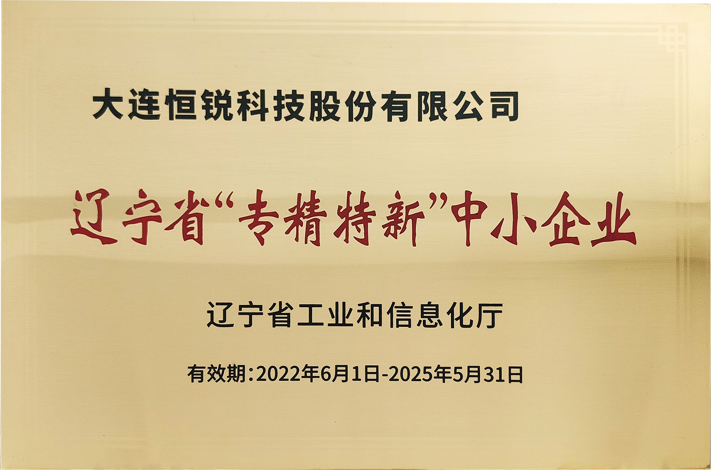
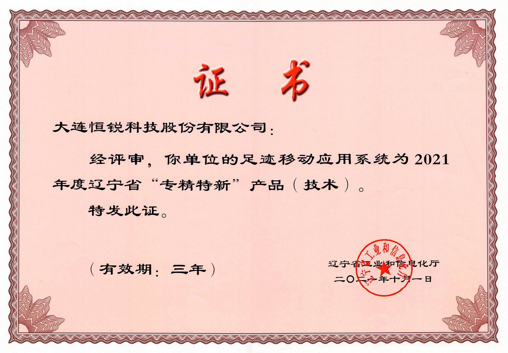
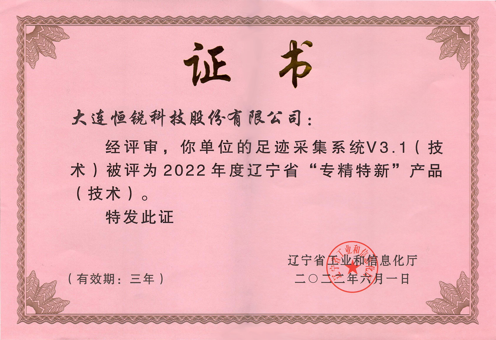

返回新闻列表
“足迹采集系统 V3.1”通过2022年度专精特新产品认定
更新时间：2022-05-292022年5月，辽宁省工业和信息化厅发布了关于《2022年度辽宁省“专精特新”梯度培育企业名单》的公示，恒锐科技被评为辽宁省《专精特新产品》、《专精特新中小企业》双冠荣誉称号。 “专精特新” 是国家为引导中小企业走专业化、精细化、特色化、新颖化发展道路，增强自主创新能力和核心竞争力，促进中小企业转型升级、高质量发展而实施的重大工程。专精特新企业主要集中在新一代信息技术、高端装备制造技术、新能源技术等中高端产业，恒锐科技凭借着产品的高科技含量、先进的设备工艺、完善的管理体系及市场强竞争力等条件被认定辽宁省“专精特新”中小企业和“专精特新”产品（技术），除了自身的硬实力，也是辽宁省工业和信息化厅对恒锐科技的认可和肯定。
此次公司被评为辽宁省“专精特新”中小企业和“专精特新”产品（技术）双冠称号，也更加坚定了我们在专业化、精细化、特色化、新颖化道路上的发展，不断提高公司自身的创新能力，研发出更多符合“专精特新”要求的产品，提高市场的竞争力，专注细分市场，聚焦主业，不断提升创新能力，在科技创新领域上贡献自己的力量。
  